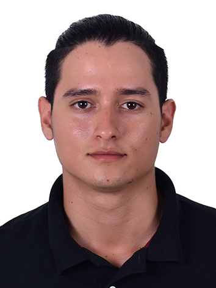

Eliasaf Sanguino

Summary
Mechatronics Engineering Professional with expertise in the fields of automation, control, maintenance, industrial design, and web development. Three years of experience in industrial maintenance and its management. I am a responsible, dynamic, creative, and empathetic individual with an aptitude for adaptation and the ability to work under pressure. I have a proactive approach to efficiently solve problems and achieve the goals set by the company.
Education
Mechatronics Engineering - Autonomous University of Bucaramanga UNAB (2016-2021)
Work Experience
-
Mechanical assembly supervisor - Simant S.A.S.
Bucaramanga August 2022 - March 2023
- Planned and ensured the correct execution of construction projects in accordance with technical specifications.
- Managed the efficient utilization of various project resources.
- Guaranteed project timelines, and minimized costs.
- Prepared progress reports, coordinated both direct and indirect personnel to address additional project requirements beyond the initial plan.
- Participated in CAD design for project presentations.
-
Maintenance supervisor - Construeasy S.A.S.
Bucaramanga January 2022 - August 2022
- Ensured the proper execution of facility maintenance for various production plants.
- Managed spaces and schedules for task completion.
- Tracked consumables, and requested them in a timely manner to ensure their availability.
- Coordinated staff shifts and maintained records of workdays
- Delivered completed work to clients.
-
Maintenance supervisor - Simant S.A.S
Aguachica March 2021 - January 2022
- Coordinated and ensured the proper execution of corrective maintenance for various client company equipment.
- Managed spaces and devised optimal solutions for improvement projects.
- Generated reports on executed work
- Supervised functional tests after each intervention.
- Tracked consumables, and requested them in a timely manner to maintain inventory.
- Generated and presented invoices and quotations, and designed solutions using CAD for project presentations.
-
Maintenance Apprentice - Freskaleche S.A.S
Aguachica May 2020 - November 2020
- Calculated and presented performance indicators for various plant areas.
- Supported maintenance planning.
- Assisted in the management of improvement projects
- Calculated and managed indicators for utility consumption.
- Supported the execution of monitoring tests for the proper development of the production process.
Skills
- Customer service: ⭐⭐⭐⭐⭐
- CAD Design with Solidworks and Inventor: ⭐⭐⭐⭐
- Microsoft 365: ⭐⭐⭐⭐
- Python: ⭐⭐⭐
- Git & Github: ⭐⭐⭐
- SQL: ⭐⭐
- English: ⭐⭐⭐
- Organizational skills: ⭐⭐⭐⭐
Others